library(tidyverse)
library(ggforce)
library(ggthemes)
library(datasets)4 Grafikk med ggplot
I dette kapittelet skal vi bruke følgende pakker:
I R er det flere systemer for grafikk. Noen er spesialiserte og knyttet til spesielle analysemetoder og gir deg et spesifikt output slik at funksjonen plot() gir deg akkurat det du skal ha. Det er forsåvidt veldig praktisk, men er ikke gode nok til å bli med i en rapport.
Vi skal her vektlegge et generelt system for grafikk som finnes i pakken {ggplot2} som er en del av tidyverse. Funksjonen ggplot kan brukes til all slags grafikk, fra helt grunnleggende til avansert, professjonell grafikk. Funksjonen ggplot er bygget opp som en gramatikk for grafisk fremstilling. Det ligger altså en teori til grunn som er utledet i boken ved omtrent samme navn: The grammar of graphics. Det er mye som kan sies om dette, men det viktige er at grafikken er bygget opp rundt noen bestanddeler. Når du behersker disse kan du fremstille nær sagt hva som helst av kvantitativ informasjon grafisk. Dette er altså et system for grafikk, ikke bare kommandoer for spesifikke typer plot. Vi skal likevel bare dekke de mest grunnleggende typer plot her.
4.1 Lagvis grafikk
Systemet er bygd opp lagvis. Det gjelder selve koden, men også hvordan det ser ut visuelt. Man kan utvide plottet med flere lag i samme plot og det legges da oppå hverandre i den rekkefølgen som angis i koden.
For enkle plot som vi skal bruke her angir man i denne rekkefølgen og med en + mellom hver del (vanligvis per linje, men linjeskift spiller ingen rolle). Hver del av koden spesifiserer enten hva som skal plottes eller hvordan det plottes, mens andre deler kan kontrollere utseende på akser, fargeskalaer, støttelinjer eller andre ting som har med layout å gjøre.
- Angi data og hva som skal plottes med
ggplot() - Angi hvordan det skal plottes med
geom_*() - Angi andre spesifikasjoner (farger, titler, koordinatsystemer osv)
Dette blir tydeligere i eksemplene og forklares underveis.
- Det første argumentet i
ggploter data. Altså: hvilket datasett informasjonen hentes fra. - Inni
ggplot()må det spesifiseresaes(), “aestethics”, som er hvilke variable som skal plottes. Først og fremst hva som skal på x-akse og y-akse (og evt. z-akse), men også spesifikasjon av om linjer (farge, linjetype) og fyllfarger, skal angis etter en annen variabel. geom_*står for geometric og sier noe om hvordan data skal se ut. Det kan være punkter, histogram, stolper, linjer osv.coord_*definerer koordinatsystemet. Stort sett blir dette bestemt av variablene. Men du kan også snu grafen eller definere sirkulært koordinatsystem, eller andre enklere ting.facet_*definerer hvordan du vil dele opp grafikken i undergrupper
4.2 Stolpediagram
Eksempeldataene her er fra Ungdata 2010-20202, og vi skal se på selvrapportert bruk av alkohol. Variabelen alko1 er for spørsmålet om hvor ofte intervjupersonenene drikker alkohol, og det er en kategorisk variabel med 5 kategorier: Aldri, sjelden, av og til, ofte og veldig ofte.
Vi lager et plot med funksjonen ggplot med koden nednefor. Første linje spesifiserer hva som skal plottes. Her er det første argumentet datasettet som skal brukes, og det andre er aes() som står for aestethics og er en funksjon som spesifiserer hvilke variable som skal brukes. Her er det bare en variabel som skal plottes, og det er alko1 som plasseres langs x-aksen. Det andre argumentet er geom_bar som spesifiserer at det skal være stolpediagram. Når man skriver kun geom_bar er en forkortelse for geom_bar(stat = "count") som betyr at det skal være en stolpe for hver kategori og høyden på stolpen skal være antall observasjoner i hver kategori.
ggplot(ungdata_alko, aes(x = alko1)) +
geom_bar()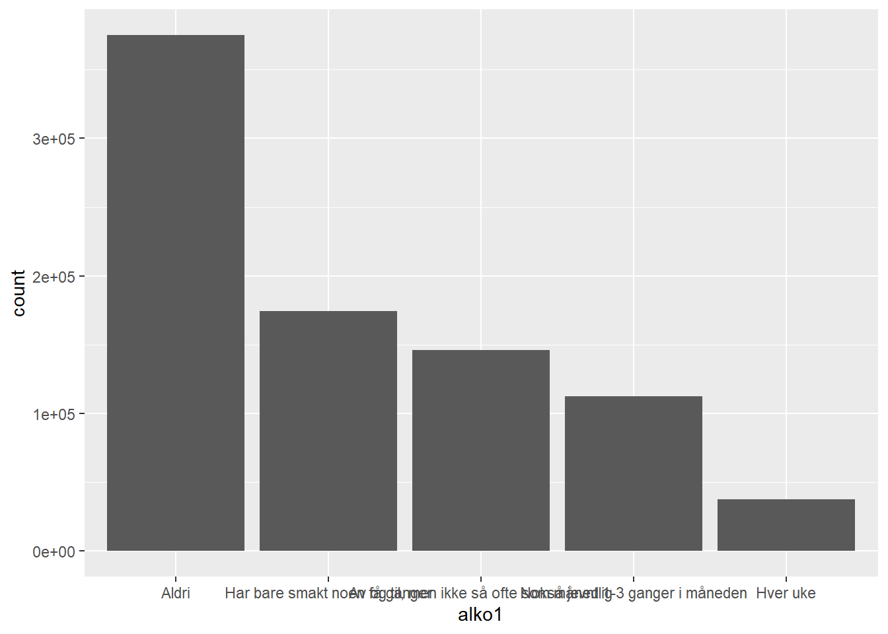
Merk at y-aksen har fått antallene notert i scientific notation. Det er ikke så pent. Det kan vi fikse på med scale_y_continuous() som gir oss mulighet til å spesifisere hvordan akseverdiene skal se ut. Pakken {scales} inneholder en rekke funksjoner for å formatere tallverdier. Her bruker vi number_format som spesifiserer nøyaktighet til 1, dvs. heltall.
ggplot(ungdata_alko, aes(x = alko1)) +
geom_bar() +
scale_y_continuous(labels = scales::number_format(accuracy = 1))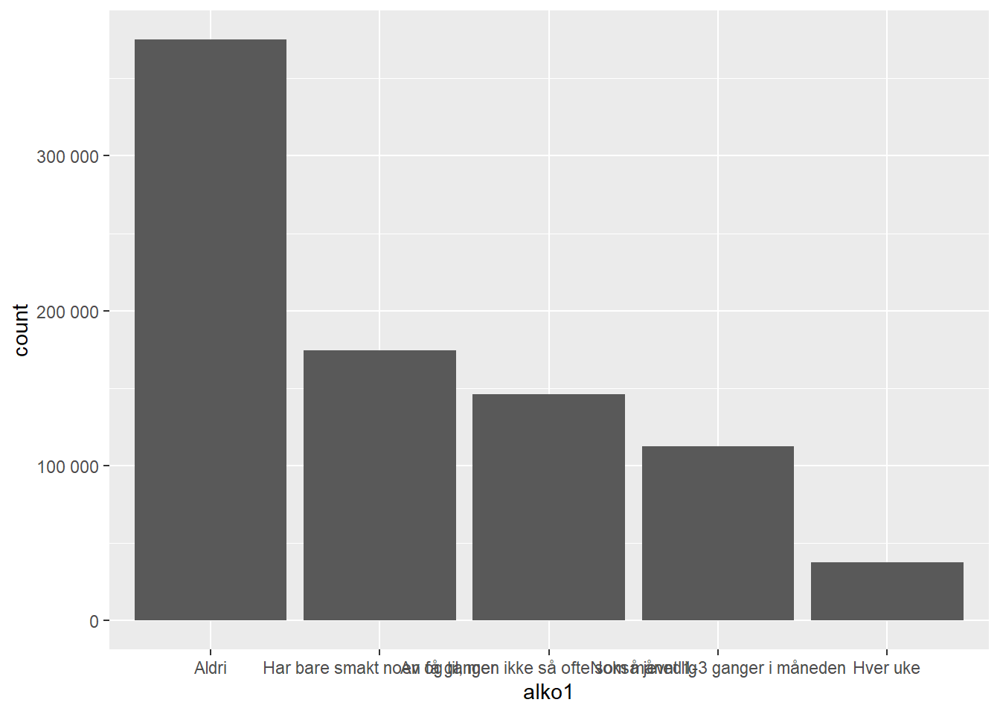
Det er også mulig å spesifisere at det skal være andeler i stedet for antall. I ggplot finnes det noen spesielle funksjoner som starter med .. deriblant ..prop.. som gir andeler. Men for at det skal regnes ut riktig må vi også spesifisere at det ikke er andelen i hver kategori, men andelen totalt. Det gjøres med group = 1 som betyr at alle observasjonene skal grupperes sammen. For å få prosent i stedet for desimaltall ganger vi med 100.
ggplot(ungdata_alko, aes(x = alko1, y = ..prop..*100, group = 1)) +
geom_bar()Warning: The dot-dot notation (`..prop..`) was deprecated in ggplot2 3.4.0.
ℹ Please use `after_stat(prop)` instead.# ggplot(ungdata_alko, aes(x = alko1, y = after_stat(prop)*100, group = 1)) +
# geom_bar()Nå gjenstår det litt ryddejobb og vi gjør disse tingene samtidig. Merk at x-aksen har noen lange tekststrenger som blir uleselige. Det kan vi fikse på med scale_x_discrete der vi kan spesifisere label og bruke funksjonen str_wrap fra pakken {stringr} som bryter opp tekststrengen etter en gitt bredde. Her har vi satt bredde til 20. Koden er litt komplisert for nybegynnere i R, så det er ikke så farlig om du ikke skjønner alt. Den linjen kan brukes i andre sammenhenger og bare endre width = etter behov.
Det neste som trengs er å endre aksetekstene. Det gjøres med labs() der vi kan spesifisere x- og y-akse og også tittel og kilde.
ggplot(ungdata_alko, aes(x = alko1, y = ..prop..*100, group = 1)) +
geom_bar() +
scale_x_discrete(labels = function(x) str_wrap(x, width = 20)) +
labs(x = "",
y = "Prosent",
title = "Antall som drikker alkohol",
caption = "Kilde: Ungdata 2010-2020")4.3 Stolpediagram med flere variable
Noen ganger ønsker man å vise fordelingen for to ulike grupper, la oss si for kjønn. En mulighet er da å rett og slett lage to stolpediagram ved siden av hverandre. Til dette kan man spesifisere at dataene er gruppert etter variabelen kjonn og at fyllfargen skal settes etter denne variablen med fill = kjonn.
Det er også mulig å spesifisere at stolpene skal plasseres ved siden av hverandre i stedet for oppå hverandre. Det gjøres med position = "dodge". 1
Tegnforklaringen plasseres automatisk til høyre for plottet. Vi kan imidlertid flytte den til bunnen med theme(legend.position = "bottom") og fjerne tittelen på tegnforklaringen med legend.title = element_blank().
ggplot(ungdata_alko, aes(x = alko1, y = ..prop..*100, group = kjonn, fill = kjonn)) +
geom_bar(position = "dodge") +
scale_x_discrete(labels = function(x) str_wrap(x, width = 20)) +
labs(x = "",
y = "Prosent",
title = "Antall som drikker alkohol",
caption = "Kilde: Ungdata 2010-2020") +
theme(legend.position = "bottom", legend.title = element_blank())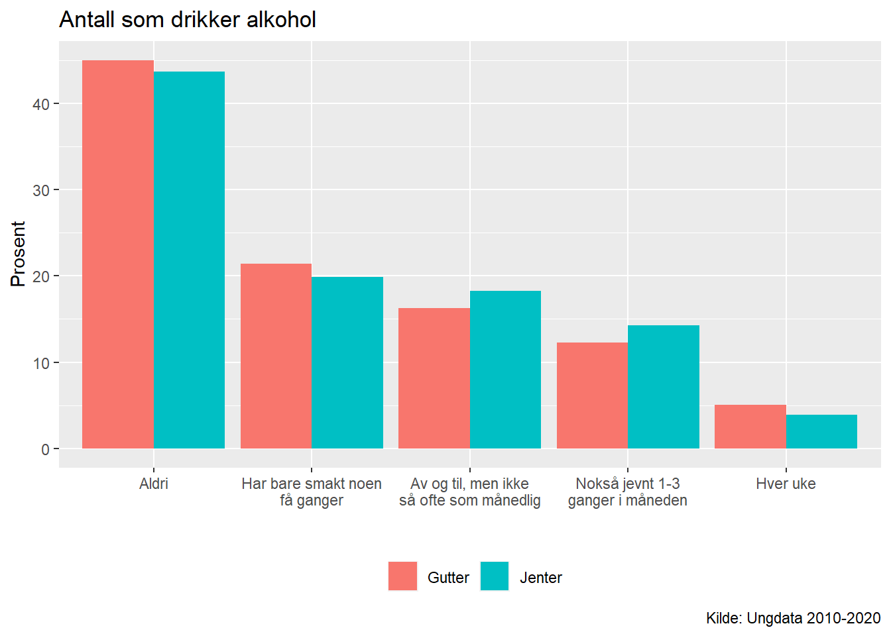
Et alternativ er å plassere grafikken for menn og kvinner ved siden av hverandre. Å legge til facet_wrap gjør dette. Da blir det trangere på x-aksen til teksten, så en mulighet er da å snu plottet med coord_flip.
ggplot(ungdata_alko, aes(x = alko1, y = ..prop..*100, group = 1)) +
geom_bar() +
scale_x_discrete(labels = function(x) str_wrap(x, width = 20)) +
labs(x = "",
y = "Prosent",
title = "Antall som drikker alkohol",
caption = "Kilde: Ungdata 2010-2020") +
facet_wrap(~kjonn) +
coord_flip()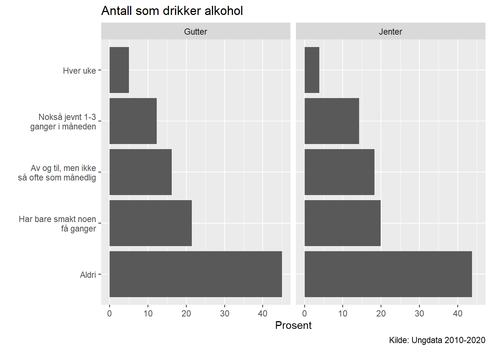
Et automatisk forvalg for geom_bar() er hvordan gruppene plasseres som er position="stack". Det betyr at gruppene stables oppå hverandre. Dette er godt egnet hvis poenget er å vise hvor mange av hvert kjønn som er i hver gruppe. Det er mindre egnet hvis du ønsker å sammenligne menn og kvinner. Da er alternativet å velge position="dodge" som følger:
4.3.1 Kakediagram
Generelt er ikke kakediagram å anbefale da korrekt tolkning involverer å tolke et areal som inneholder vinkel. Det er intuitivt vanskelig å se hvor store hvert kakestykke er med det blotte øyet - med mindre man skriver tallene på,da. Men da kunne man jo også bare laget en tabell?
Med få kategorier som er rimelig forskjellig kan det gi et ok inntrykk, men ofte ender man opp med å måtte skrive på tallene likevel. Vi tar det med her egentlig bare fordi mange insisterer på å bruke det. Så vet du at det er mulig.
Første steg er å lage et aggregert datasett med antall observasjoner og prosent i hver kategori, som vist nedenfor. Dette dekker vi i et senere kapittel og fokuserer på selve plottet her.
# A tibble: 5 × 4
alko1 n pct lab.pos
<fct> <int> <dbl> <dbl>
1 Hver uke 37576 4.45 2.22
2 Nokså jevnt 1-3 ganger i måneden 112311 13.3 11.1
3 Av og til, men ikke så ofte som månedlig 145934 17.3 26.4
4 Har bare smakt noen få ganger 174322 20.6 45.3
5 Aldri 374957 44.4 77.8 Utgangspunktet er et stolpediagram som vi har laget ovenfor. Det er bare å bytte ut geom_bar med geom_col som er en forkortelse for geom_col(stat = "identity"). Det betyr at høyden på stolpene er gitt i datasettet. For å lage et kakediagram må vi også legge til coord_polar som gjør at det blir sirkulært.
ggplot(alko1_sum, aes(x = "", y = pct, fill = alko1)) +
geom_col() +
coord_polar("y", start=0)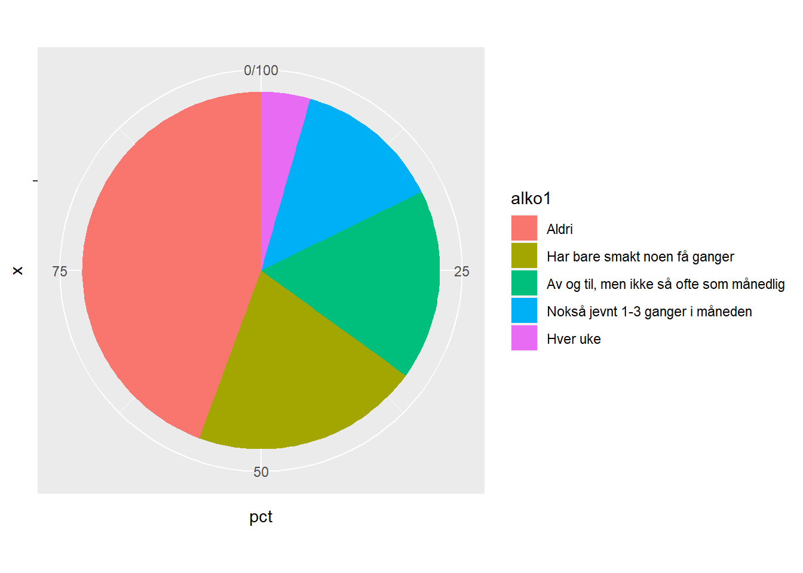
For å gjøre plottet penere fjerner vi hjelpelinjene, legger til prosenttallene innenfor kakestykkene og endrer fargepaletten.
ggplot(alko1_sum, aes(x = "", y = pct, fill = alko1)) +
geom_col() +
coord_polar("y", start=0) +
theme_void()+
geom_text(aes(y = lab.pos, x=1.6, label = paste(round(pct), "%" )))+
scale_fill_brewer(palette="Blues", direction = -1)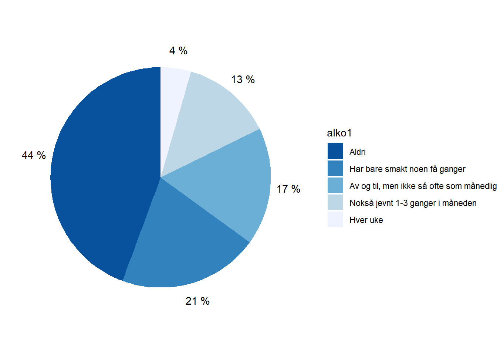
Det er også mulig å lage et kakediagram for hver gruppe. Da må vi legge til facet_wrap som vi har brukt tidligere. Det forutsetter at dataene er tilsvarende laget for hver gruppe. Objektet alko1_sum2 har aggregert data for kjønn.
# A tibble: 10 × 5
alko1 kjonn n pct lab.pos
<fct> <fct> <int> <dbl> <dbl>
1 Hver uke Jenter 16528 3.86 1.93
2 Hver uke Gutter 21048 5.05 2.53
3 Nokså jevnt 1-3 ganger i måneden Gutter 51195 12.3 11.2
4 Nokså jevnt 1-3 ganger i måneden Jenter 61116 14.3 11.0
5 Av og til, men ikke så ofte som månedlig Gutter 67666 16.2 25.5
6 Av og til, men ikke så ofte som månedlig Jenter 78268 18.3 27.3
7 Har bare smakt noen få ganger Jenter 85078 19.9 46.3
8 Har bare smakt noen få ganger Gutter 89244 21.4 44.3
9 Aldri Jenter 187380 43.7 78.1
10 Aldri Gutter 187577 45.0 77.5 ggplot(alko1_sum2, aes(x = "", y = pct, fill = alko1)) +
geom_col() +
coord_polar("y", start=0) +
theme_void()+
geom_text(aes(y = lab.pos, x=1.6, label = paste(round(pct), "%" )))+
scale_fill_brewer(palette="Blues", direction = -1) +
facet_wrap(~kjonn)4.4 Grafikk for kontinuerlige data
Vi skal nå se på hvordan vi kan fremstille kontinuerlige data. Vi bruker et annet uttrekk fra Ungdata der en rekke spørsmål er aggregert til en indeks for livskvalitet og en indeks for atferdsproblemer. Indeksene er laget ved å ta gjennomsnittet av de enkelte spørsmålene, og konstruert slik at høyere verdier betyr bedre livskvalitet og færre atferdsproblemer.
4.4.1 Histogram
Histogram er en vanlig måte å fremstille kontinuerlige data på. Det er en måte å gruppere dataene i intervaller og høyden på stolpene representerer antall observasjoner i hvert intervall. Alternativt kan stolpene representere andelen i hvert intervall eller tettheten.
Vi starter med å lage et histogram for livskvalitet. Det gjøres med geom_histogram.
ggplot(ungdata_kont, aes(x = livskval)) +
geom_histogram()Antall og bredden på intervallene bestemmes automatisk av R. Det er ikke alltid optimale valg, og det kan være greit å justere dette selv. Det gjøres med binwidth som angir bredden på intervallene. I eksempelet over ser fordelingen litt pussig ut med et tomt intervall, men det kan skyldes hvordan intervallene tilfeldigvis ble plassert. Hvis plottet ser pussig ut bør man sjekke om det er fordi intervallene er for brede eller smale. Følgende kode gjør en liten endring, og du kan selv sjekke med ulike verdier for binwidth og se hvordand et påvirker resultatet.
ggplot(ungdata_kont, aes(x = livskval)) +
geom_histogram(binwidth = .15)Det er også vanlig å fremstille det samme på en “tetthetsskala”, der arealet summeres til 1. Det betyr at arealet for hvert intervall tilsvarer en andel. Visuelt sett er det vel så mye arealet vi oppfatter som høyden på stolpene. Men det er bare skalaen på y-aksen som har endret seg. Visuelt sett, ser histogrammene helt like ut.
ggplot(ungdata_kont, aes(x = livskval, y = ..density..)) +
geom_histogram(binwidth = .15)4.4.2 Density plot
Density plot er en måte å fremstille det samme på, men i stedet for å dele inn i intervaller som i histogram lager vi en glattet kurve. Det blir på skalaen “tetthet” som i histogrammet ovenfor. På tilsvarende måte som binwidth kan vi justere hvor glatt kurven skal være med bw som står for bandwidth. Høyere tall gir mer glattet kurve, mens lavere tall gir mer detaljert kurve. Vanligvis vil det automatiske forvalget som R gjør for deg være bra nok, men det kan også være aktuelt å justere dette selv som vist nedenfor.
ggplot(ungdata_kont, aes(x = livskval)) +
geom_density(bw = .1)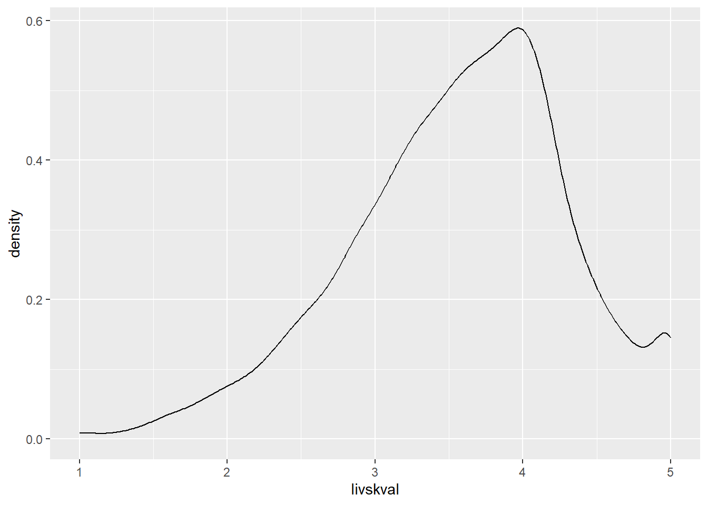
Vi kan legge et histogram og density plot oppå hverandre da y-skalen er lik. Da ser man lettere at det er samme informasjon som fremstilles på ulike måter.
ggplot(ungdata_kont, aes(x = livskval)) +
geom_histogram(aes(y = ..density..), binwidth = .15, fill = "lightgrey", col = "grey") +
geom_density(col = "red", linewidth = 1, bw = .1) +
theme_minimal()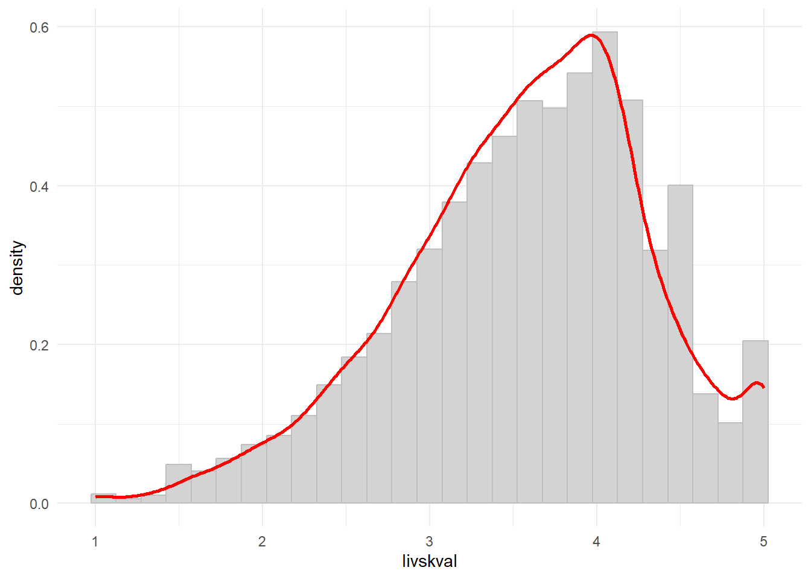
En fordel med tetthetsplot er at det er lettere å sammenligne grupper. Her er et eksempel som viser fordelingen av livskvalitet etter kjønn. Vi ser at gutter gjennomgående rapporterer høyere livskvalitet enn jenter. Begge kurvene er skjeve med en lang hale til venstre, men kurven for gutter er skjevere enn for jenter.
ggplot(ungdata_kont, aes(x = livskval, group = kjonn, color = kjonn)) +
geom_density(linewidth = 1, bw = .1)+
guides(fill = guide_legend(override.aes = list(shape = 1 ) ) ) +
theme_minimal()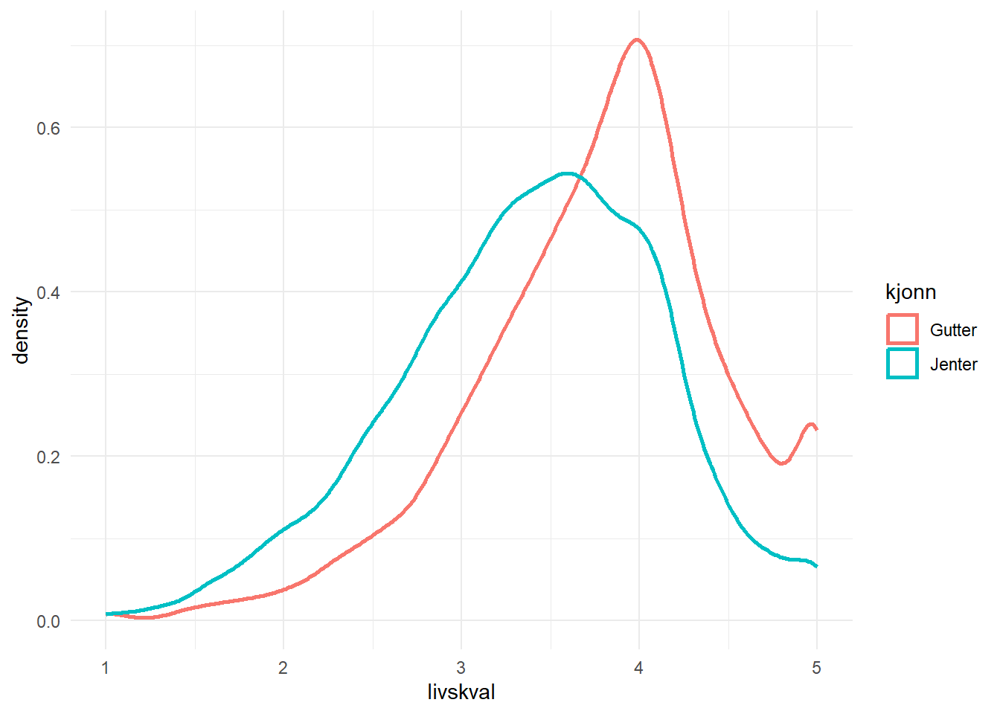
Vi har tidligere vist bruken av facet_wrap for å lage flere plott ved siden av hverandre. Det kan også brukes her. Da må vi legge til facet_wrap(~kjonn) som betyr at vi vil ha to plott, ett for hver verdi av kjønn. Hvilken fremstilling som er best i et gitt tilfelle kommer an på hva man ønsker fremheve og hva som er mest informativt. Generelt sett er det å legge plottene oppå hverandre best når man ønsker gjøre en direkte sammenligning, mens ved siden av hverandre hvis man ønsker å se på hver gruppe for seg.
ggplot(ungdata_kont, aes(x = livskval)) +
geom_density(linewidth = 1, bw = .1)+
theme_minimal()+
facet_wrap(~kjonn)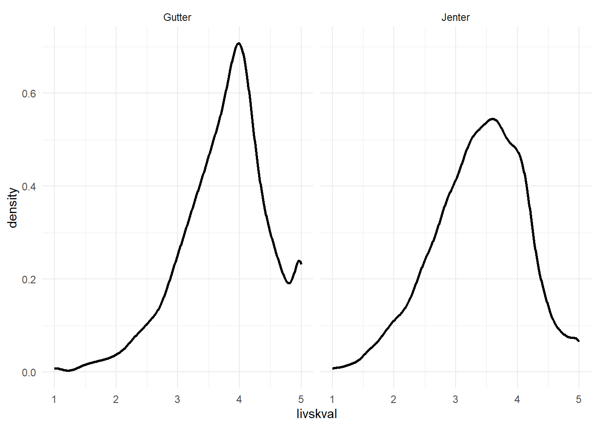
En variant av samme fremstilling er å bruke fyllfarge i stedet for linjefarge. Da må vi legge til fill = kjonn i aes(). Det er også mulig å endre tittel på tegnforklaring fra variabelnavnet til noe mer gramatisk korrekt med guides(fill=guide_legend(title="Kjønn")).
ggplot(ungdata_kont, aes(x = livskval, group = kjonn, fill = kjonn)) +
geom_density(alpha = .3, bw = .1)+
guides(fill=guide_legend(title="Kjønn"))+
theme_minimal()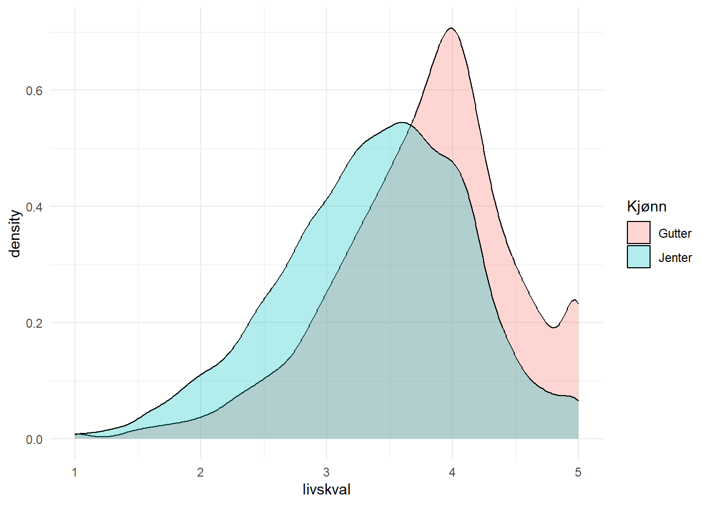
4.4.3 Flere variable samtidig
4.4.3.1 Boksplot
ggplot(ungdata_kont, aes(y = livskval, group = kjonn)) +
geom_boxplot()+
theme_minimal()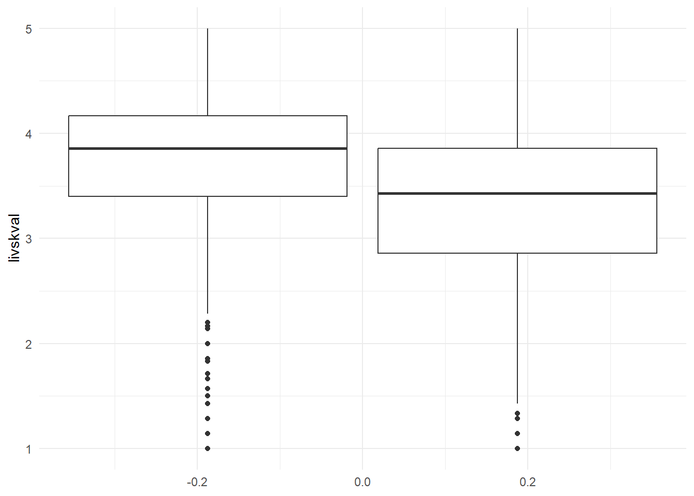
4.4.3.2 Ridgeplot
Ridgeplot er en annen måte å sammenligne en kontinuerlig fordeling betinget på en gruppering.
library(ggridges)
ggplot( ungdata_kont, aes(x = livskval, y = klasse)) +
geom_density_ridges() 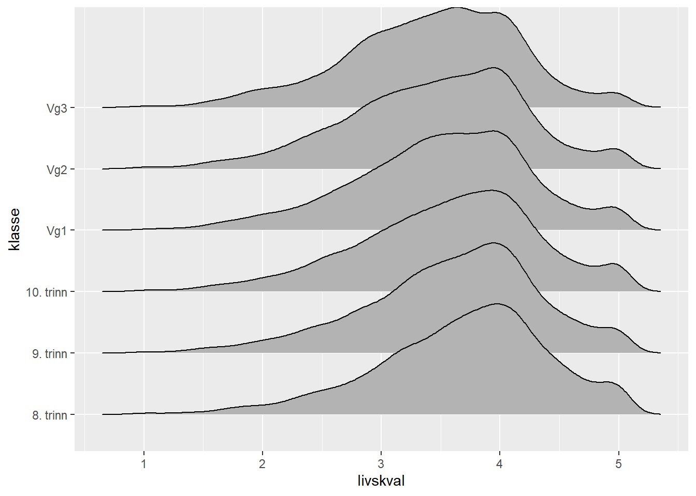
4.4.3.3 Scatterplot
ggplot(ungdata_kont, aes(x = livskval, y = samfunnstillit)) +
geom_point()+
theme_minimal()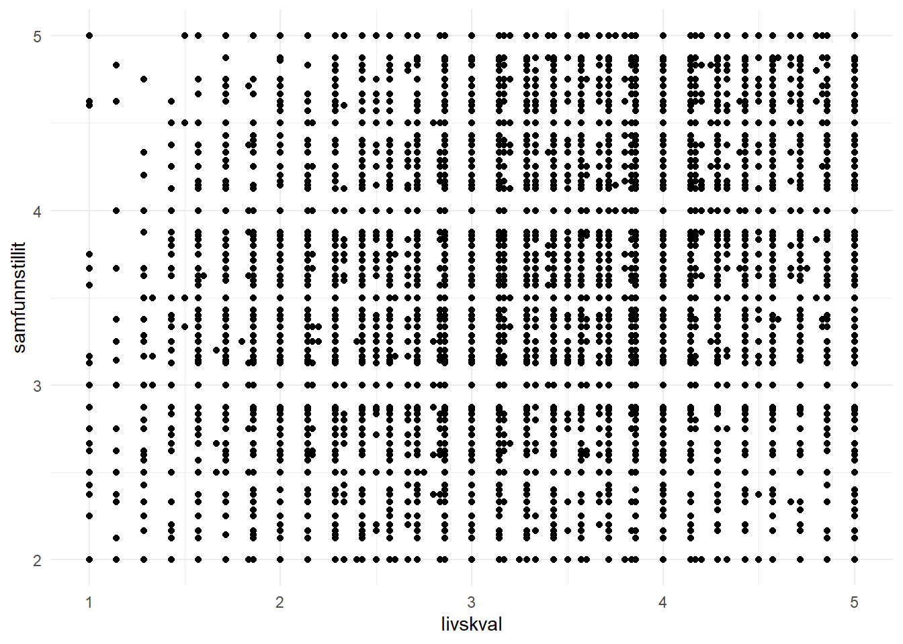
Når det er mange observasjoner kan det bli litt rotete med punkter som overlapper hverandre. Det er vanskelig å se noen mønstre i et slikt plot. Det kan bedres med noen teknikker for å fremheve nettopp hvor de fleste datapunktene er. I det følgende gjør vi to ting samtidig: legger til gjennomsiktig farge på punktene med alpha = som angir grad av gjennomsiktighet. Når alpha er 1 er det ingen gjennomsiktighet, og ved 0 er det helt gjennomsiktig. Her må man prøve seg frem. I tillegg bruker vi geom_jitter som legger til litt tilfeldig støy på hvert datapunkt slik at de ikke så ofte ligger akkurat oppå hverandre.
Her har vi valgt en veldig høy grad av gjennomsiktighet slik at relativt vanlige verdier synes tydelig, mens mer sjeldne verdier blir nesten usynlige.
ggplot(ungdata_kont, aes(x = livskval, y = samfunnstillit)) +
geom_jitter(alpha=.05)+
theme_minimal()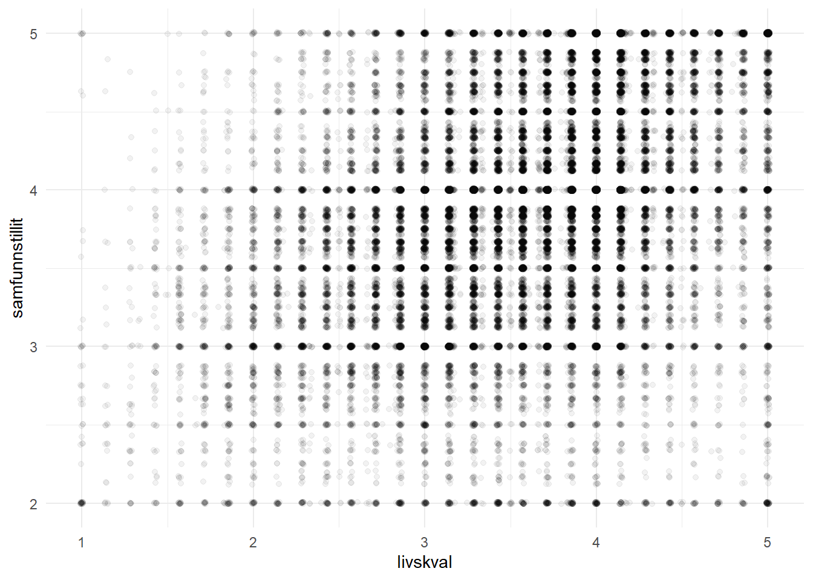
ggplot(ungdata_kont, aes(x = livskval, y = samfunnstillit)) +
geom_hex(bins = 10)+
theme_minimal()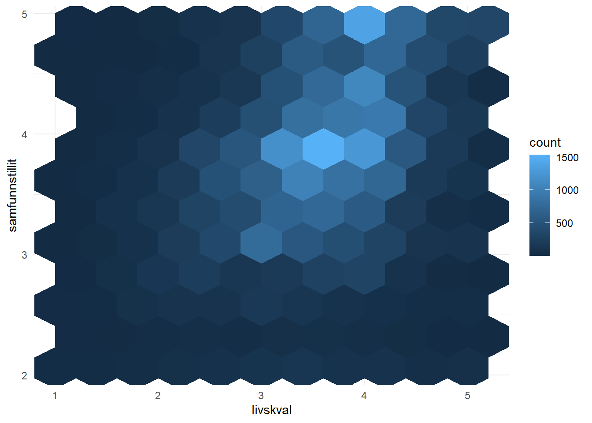
Det er også mulig å legge til en glattet kurve som viser tettheten av punktene. Det gjøres med geom_density_2d_filled som lager et konturplot der arealet under kurven er fargekodet. Det er også mulig å legge til konturlinjer med geom_density_2d. Nedenfor er begge brukt samtidig, men man kan også velge bare en av dem.
ggplot(ungdata_kont, aes(x = livskval, y = samfunnstillit)) +
geom_density_2d_filled()+
geom_density_2d(col = "white")+
theme_minimal()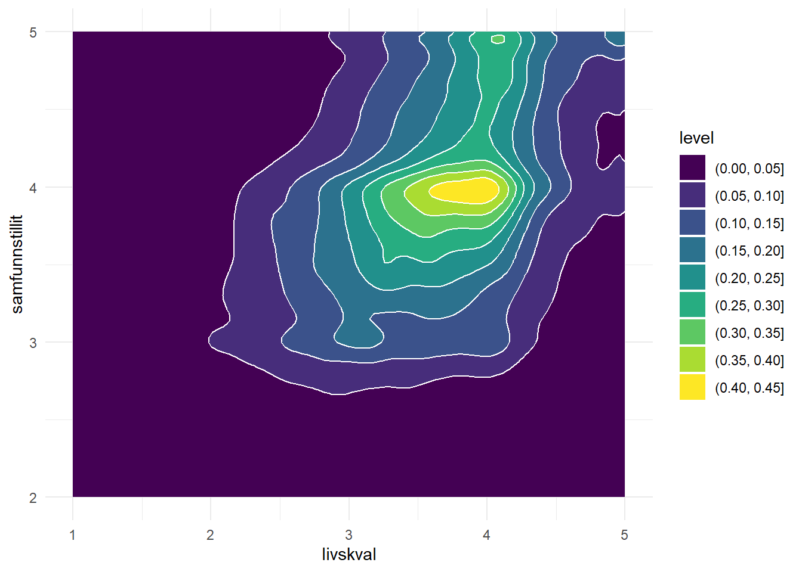
Alternativet, som er det automatisk forvalget, er
position = "stack"hvor stolpene ville blitt plassert oppå hverandre.↩︎